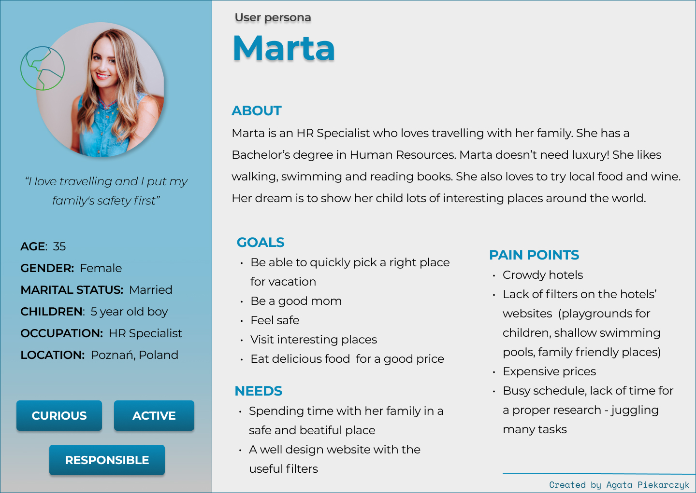

Persona is a representation of your target user. To create a user persona a proper research is needed as we need to establish our users' demographic information, behaviors, goals and pain points (frustrations). Thanks to personas we are able to build a better product for our customers. It is a fictional character with its own name, picture and interests.
Persona is based on a thorough research which is usually conduct by a UX Researcher. It should be created with attention to detail. Proto-persona is a non-research driven representation of our target group (sometimes time and money is an obstacle to conduct a proper research). Usually is a low-fidelity project.
Let's imagine that we are creating a hotel search application where you can easily find good hotels for a decent price, with a bunch of useful filters (especially when it comes to family-friendly options). Our user persona is a busy mom Marta.
